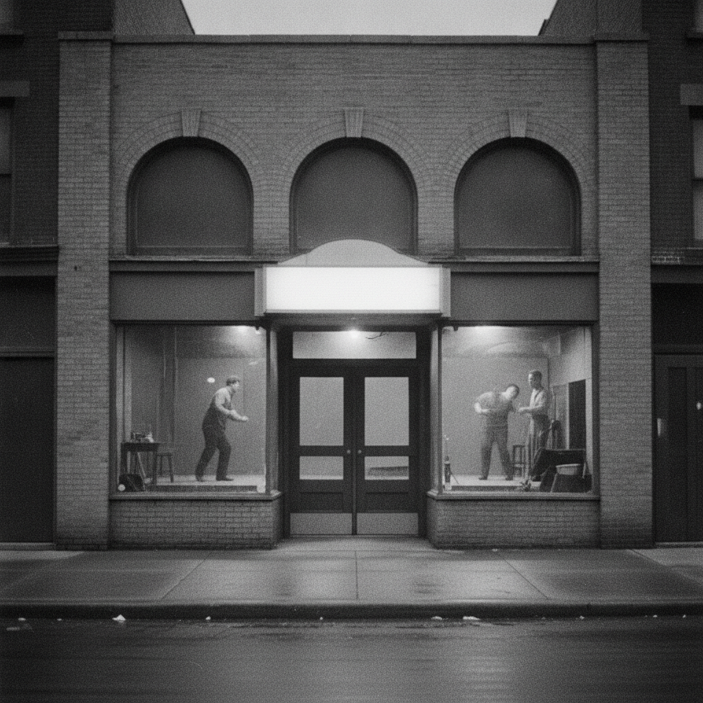
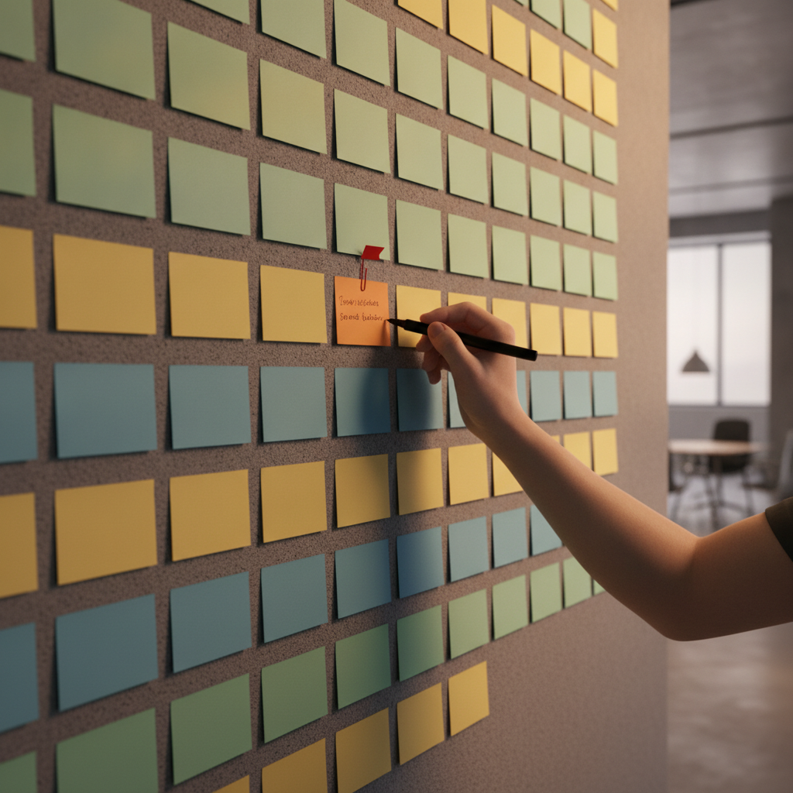

I learned “yes, and” during my MBA, in a class that had nothing to do with improv on paper. A classmate had to build a semester project around a business idea, get the room to participate, and make the case for it. His was an improv studio in St. Louis, and what he actually taught wasn’t a comedy game. It was a discipline: no matter what the other person just said, however wrong or off-topic or goofy it sounds, you take it. You find the piece of it that’s true, and you build on it. You don’t block. You don’t redirect to your own idea. You add.
That’s the whole rule, and it survives the trip out of the theater intact. Run it inside project management, inside a one-on-one, inside a sales relationship, and it stops being a game and starts being a system for what to do with input you didn’t ask for.
Where the Rule Came From
The habit of "yes, and" is older than any single improv teacher's name attached to it now.

The instinct traces back to the Compass Players in 1950s Chicago, the troupe that grew out of Viola Spolin’s improvisational-games method and later split into Second City.1 Spolin codified the underlying theory first; “yes, and” itself came into common use afterward, as the players who trained under her, and the generation after them (Del Close, Keith Johnstone, and the teachers at Second City), turned her exercises into a repeatable rule for keeping a scene alive.1 The rule was never really about comedy. It was about what happens to a group’s output when nobody in the room is allowed to just say no.
Innovation Intake: Don’t Kill the Idea, Route It
Most idea-intake processes fail at the first sentence someone hears. An employee floats something that sounds impractical, and the fastest, easiest, most natural response is “that won’t work.” Technically true, and it ends the conversation before anyone finds out what was actually usable inside the idea.
The version of this told to me, secondhand, from Boeing: an employee suggests building the entire airplane out of whatever the black box’s crash-resistant material is made of, on the logic that if it survives a crash, the airplane should too. As stated, the idea is absurd. Nobody is going to build a fuselage out of black-box casing. But “yes, and” doesn’t evaluate the idea as stated. It routes it. Engineers get asked whether that material, or something like it, could reinforce specific structural points. Quality specialists get asked whether it changes anything about compound durability. Someone checks whether it has a use case inside the wings, where fuel and structural integrity already intersect. Most of that goes nowhere. Occasionally, a fragment of it doesn’t.
I can’t verify that specific exchange happened word for word; it was relayed to me as an example, not something I sat in the room for. What’s independently documented is that Boeing runs exactly this kind of intake at scale: a 2018 employee crowdsourcing push, run through an online survey and iPad “idea stations” placed across its sites, pulled in more than 40,000 employee submissions, which the company says it read in full before shaping a $100 million workforce-development investment around what came back.2 The specific airplane-material anecdote may be apocryphal. The underlying practice, a real channel where a “bad” idea gets read instead of dismissed, isn’t.
The mechanism generalizes past aerospace. Triage the idea instead of the verdict: what’s the workable kernel, who’s positioned to evaluate that kernel, and where else in the business might it apply even if it’s wrong for the spot it was suggested for. That’s a cheap process to run, and it’s the difference between a team that hears “bad idea, dismissed” and stops raising its hand, and a team that hears “here’s what we did with it” and keeps raising it.

Scope Management: Facilitation, Not Gatekeeping
Project and program leaders live inside a harder version of the same problem. Scope creep is real, and the standard defense against it is a gate: a change-control process, a firm no, a person whose job is to say “that’s out of scope” and mean it. Gates work, right up until they start training people to stop bringing ideas to the table at all, because every idea that gets flatly refused is a small, cumulative lesson that this isn’t a room where new thinking is welcome.
“Yes, and” run inside scope management doesn’t mean approving everything. It means validating the ambition before you constrain it. Someone proposes something that would genuinely blow the budget or the timeline: yes, that’s a real gap worth solving, and here’s what it actually costs, and here’s whether it fits this phase or the next one, and here’s the SOP it might belong to instead if it doesn’t fit this project at all. The idea gets a real answer instead of a wall. The scope stays intact. And the person who raised it learns that raising things is worth doing, which is the resource every project actually runs out of first.
The two failure modes worth naming here are opposites, and it’s easy to slide into either one without noticing. HBR’s own recent reporting on the technique makes the same point from the other direction: “yes, and” is powerful for running more collaborative, productive conversations, but only “when used intentionally,” not as a reflexive habit of agreeing with everything that gets said.3 A leader who “yes, ands” every request without ever landing on a constraint isn’t facilitating, they’re just deferring the no to a worse moment, later, when it costs more to say. The discipline is in the second half of the phrase as much as the first: you add something real, a constraint, a redirect, a cost, not just enthusiasm.
The One-on-One: Where This Actually Builds Trust
The clearest place to feel “yes, and” working is a one-on-one with someone who doesn’t talk much. Not the quiet-and-fine employee, the one who’s clearly holding something back, showing up right on time and no earlier, giving you just enough and no more. Ask that person a direct question and you’ll often get a real answer. What you rarely get, without deliberate work, is their unprompted idea, because somewhere along the way they learned that unprompted ideas get corrected instead of built on.
“Yes, and” is the fix, applied one small exchange at a time. They float something half-formed, tangential, or not fully thought through. You don’t correct it on the spot. You find the piece that’s usable, “yes, I like that, what if we pointed it at this SOP instead,” and hand it back to them slightly bigger than it arrived. Do that consistently and the behavior changes: people who were guarded start bringing you things before you ask, because the last five things they brought you got taken seriously instead of picked apart.
This isn’t just a management feeling. It’s the same variable Amy Edmondson spent a career researching under the name psychological safety, and the finding replicates in places well outside a one-on-one. Edmondson’s original 1999 study of hospital nursing teams found something counterintuitive: the better-performing teams reported more errors, not fewer, because they were safe enough to surface mistakes instead of hiding them, and that willingness to surface problems is what let them actually fix things.4 Google’s Project Aristotle, running its own multi-year study of what separates high- and low-performing teams internally, landed on the same variable as the single strongest predictor of team performance, ahead of raw talent, tenure, or process maturity.5 “Yes, and” isn’t a personality trait some managers happen to have. It’s a repeatable technique for building the exact condition that research keeps finding matters most.
The part of this worth watching for as a leader isn’t just what people say in the room. It’s who’s gone quiet outside of it. Someone who’s normally present and now isn’t, who’s dragging for a stretch that doesn’t match their usual pattern, is telling you something whether or not they’ve said a word. The same instinct that makes you build on a half-formed idea should make you notice the absence of ideas from someone who used to have them, and ask what’s actually going on before it becomes a performance conversation instead of a support one.
Relationship-Driven Sales: The Deal Isn’t Made in the Meeting
The formal meeting is where a deal gets signed. It’s rarely where a deal gets made. The actual work, the trust that makes someone comfortable putting their name and budget behind a decision, tends to happen in the parts of the relationship that don’t show up on a calendar labeled “sales call”: a follow-up that wasn’t required, a lunch that wasn’t strictly necessary, a conversation on a weekend that had nothing to do with the pitch. None of that is a shortcut around doing good work. It’s the months, sometimes years, of grooming a relationship that makes the eventual formal ask feel like a formality instead of a cold pitch.
“Yes, and” is the operating mode that makes that kind of relationship possible to sustain, because it requires being reachable and responsive in a way that a strict nine-to-five boundary doesn’t allow for. That’s not a call to be always-on for its own sake. It’s a recognition that for people carrying real client relationships, work and the rest of life are genuinely intertwined rather than cleanly separable, and treating every after-hours message as an intrusion instead of part of the job tends to correlate with staying further from where the actual decisions get made. The skill worth building isn’t rigid separation. It’s the ability to hold both, a family conversation at ten in the morning and a client call at eight at night, without either one crowding the other out, which takes practice the same way any other juggled skill does: you take on a slightly bigger stretch than you’re fully ready for, you drop something, you learn what you can actually carry, and you get better at it the more you do it.
The Discipline Underneath the Technique
None of this works as blanket agreement. A leader who says “yes, and” to every idea, every scope request, every deal in the pipeline, isn’t practicing the technique, they’re avoiding the harder job of judgment. The rule was never “never say no.” It’s “don’t say no before you’ve found what’s usable,” which is a meaningfully smaller, more disciplined ask. Triage the idea before you kill it. Validate the ambition before you constrain it. Take the quiet contribution seriously before you move past it. Build the relationship before you need it to close something. In each case, the “and” is doing real work, adding a constraint, a redirect, a next step, not just padding a reflexive yes.
Key Takeaways
Key Frameworks:
- “Yes, and” (improv, via the Compass Players and Second City lineage): accept the workable premise in any input, then extend it with a real next step, rather than evaluating and dismissing it on the spot.
- Psychological safety (Amy Edmondson): a team’s shared belief that it’s safe to surface errors, half-formed ideas, and concerns, empirically linked to learning behavior and team performance.
Try It: In your next one-on-one with the quietest person on your team, don’t ask a direct question and wait for a direct answer. Let them bring up something half-formed, and instead of correcting or redirecting it, find the one piece that’s usable and hand it back to them bigger than they gave it to you.
-
Gary Schwartz, “The Trouble with ‘Yes, And…’,” Spolin Games Online, https://spolingamesonline.org/the-trouble-with-yes-and/ ↩↩
-
“Boeing Announces Details of $100 Million Employee Education Investment,” Boeing news release, June 4, 2018, https://boeing.mediaroom.com/2018-06-04-Boeing-announces-details-of-100-million-employee-education-investment ↩
-
Debra Schifrin, “When ‘Yes, and…’ Backfires,” Harvard Business Review, August 11, 2025, https://hbr.org/2025/08/when-yes-and-backfires ↩
-
Amy C. Edmondson, “Psychological Safety and Learning Behavior in Work Teams,” Administrative Science Quarterly, Vol. 44, No. 2 (1999). ↩
-
Julia Rozovsky, “The Five Keys to a Successful Google Team,” re:Work, Google, November 17, 2015. ↩